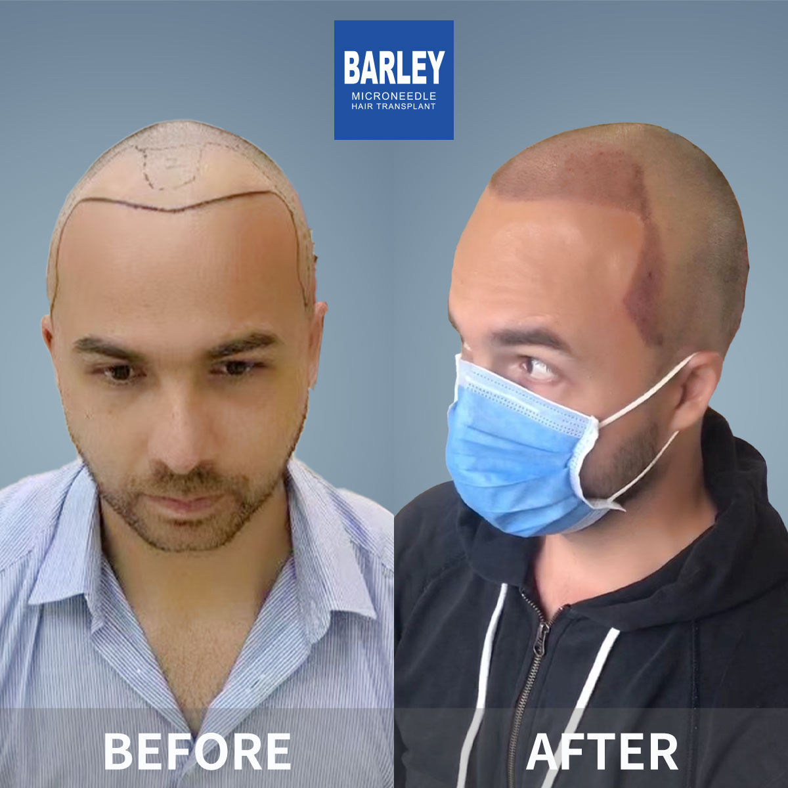

Hair thickening transplant is a specialized density restoration procedure designed for patients whose hair has gradually become thinner over time but who have not experienced complete baldness in any area. Unlike traditional hair transplants that fill in bald patches, this technique strategically places healthy follicular units throughout an existing — yet thinning — hair field to increase overall volume and create a visibly fuller appearance.
This procedure is particularly effective for individuals with diffuse thinning — a condition where hair gradually becomes finer and sparser across the top of the scalp. Our surgeons calculate the optimal placement pattern to ensure each new graft complements your existing hair, creating a natural-looking density increase that is indistinguishable from naturally thick hair. The technique demands exceptional precision, as grafts must be placed between existing hairs without causing any damage.
Using our proprietary microneedle FUE technology, we extract individual follicles from your permanent donor zone and implant them at calculated intervals throughout the thinning area. The result is a significant boost in hair count per square centimeter, giving your hair the body, volume, and fullness you had in your younger years. Patients typically see a 40— 0% increase in visual density after a single session.
Gradual, widespread thinning across the top of the scalp that makes your scalp visible under bright light. Our density transplant restores coverage and eliminates the thin, see-through appearance.
The crown area often becomes thin and translucent while the hairline remains intact. We add targeted density to the vertex region for a full, thick-looking crown that restores your natural profile.
Some people naturally have thinner hair density even without significant hair loss. We can increase your overall follicle count for a fuller, more voluminous look that boosts your confidence.
If you had a hair transplant years ago and now want more density, we can add grafts between your existing transplanted hairs to significantly boost the visual fullness of your result.
Step 1 — Density Analysis: Using advanced imaging technology, we measure your current hair density (hairs per square centimeter) across different areas of your scalp. This data-driven approach allows us to create a precise plan for where and how many grafts are needed to achieve your desired density.
Step 2 — Strategic Graft Placement: Our surgeons use an organic zigzag distribution pattern to scatter new grafts evenly throughout the thinning area. Unlike uniform grid placement, which can look artificial, our pattern mimics the natural randomness of hair growth — creating the most authentic-looking density increase possible.
Step 3 — Multi-Hair Graft Optimization: For maximum visual impact, we use a combination of single-hair and multi-hair grafts (2— hairs per graft). Multi-hair grafts deliver significantly more visual density per unit and are strategically placed in areas where the biggest density boost is needed.
Step 4 — Angle and Direction Matching: Each new graft is implanted at the exact same angle and direction as your existing hair. This ensures the transplanted hair blends seamlessly with your native hair, creating a uniform appearance that is impossible to distinguish from natural growth.
Typically requires 800— ,500 grafts to boost density from 30— 0 to 50— 0 hairs/cm A focused procedure targeting specific thin areas for a noticeable improvement.
Usually requires 1,500— ,500 grafts to achieve a clearly noticeable density increase across the entire top of the scalp.
May require 2,500— ,500 grafts to restore substantial density in cases of advanced diffuse thinning across the crown and mid-scalp.
Typically 1,000— ,000 grafts to fill in between existing transplanted hairs for a noticeably fuller, more complete result.
Our 0.6mm micro-punches allow us to place new grafts between existing hairs without damaging them — a level of precision that larger tools simply cannot achieve.
We use data-driven scalp analysis to identify exactly where your hair is thinnest and calculate the optimal number of grafts needed for each zone.
Our dedicated international patient coordinators communicate in fluent English, ensuring smooth and comfortable treatment from consultation to recovery.
Precision FUE technology designed specifically for thinning hair

If your hair has gradually become thinner and less dense over the years, our hair thickening transplant can restore the full, healthy appearance you once had. We strategically add healthy follicles throughout your thinning areas, creating a significant density boost that is completely natural and permanent.
After a single session
Between existing hairs
Safe for existing follicles
Lasts a lifetime
Your journey to fuller, denser hair — step by step
Measure your current hair density and identify all thinning zones
Assess available donor follicles for optimal density restoration
Extract individual grafts using our 0.6mm microneedle FUE system
Separate single-hair and multi-hair grafts for strategic placement
Place each graft between existing hairs with perfect angle matching
Comprehensive recovery support and progress monitoring
What makes our density enhancement procedure different
We do not simply pack grafts in randomly. Our surgeons use a scientifically calculated distribution pattern that maximizes visual density with the fewest possible grafts. This approach gives you the most natural-looking fullness while preserving your donor reserves for the future.
By strategically placing multi-hair grafts in areas where density is most lacking, we achieve a greater visual impact than transplanting the same number of single-hair grafts. This means you get a fuller-looking result with fewer total grafts — saving both time and money.
Our ultra-fine 0.6mm microneedle tools are small enough to pass between your existing hairs without disturbing or damaging them. This is critical for thickening procedures where the goal is to add density while preserving every single native hair you still have.
An industry leader trusted by patients worldwide
Pioneering microneedle hair transplant technology since 2006
Across major Chinese cities, all maintaining the same high clinical standards
Innovative microneedle and implant pen systems for consistently superior results
Trusted by international patients for consistent, remarkable results
Full English-language support for international patients from consultation through recovery
State-of-the-art facilities with strict clinical protocols for your peace of mind
See the remarkable density transformations our patients have achieved



Moments captured with our satisfied patients

Posing with our medical team after successful procedure

Celebrating fantastic results with our doctors

Another satisfied patient shares their joy

Patient with our specialist before discharge

Happy patient with Dr. Chen post-treatment

Excited patient showing their new look

Patient delighted with their transformation

Patient starting fresh with amazing results
Hear from patients who chose Barley for their density restoration
I could see my scalp through my hair under any overhead light — it was deeply embarrassing. After 2,100 grafts of density enhancement across my crown and mid-scalp, my hair is now thick enough that I can finally stand under bright lights without worrying. The difference is truly night and day.
I had a transplant five years ago in Turkey, but it never looked full enough. Barley added 1,500 grafts between my existing ones and the density is finally what I originally hoped for. The zigzag placement pattern they use is brilliant — it looks exactly like natural growth.
As a woman with diffuse thinning, I was terrified about getting a transplant. Dr. Chen was incredibly gentle and understanding throughout the whole process. She placed 1,200 grafts using the ultra-fine needles and my part line is finally narrow again. My hairdresser did not even notice I had anything done — she just said my hair looked healthier!
The pre-procedure density analysis was incredibly thorough — they actually measured my hairs per square centimeter and showed me the exact weak spots on a detailed map. 1,800 grafts later, my density went from 35 to 55 hairs/cm At eight months post-op, my hair has real volume again for the first time in over a decade.
I always had naturally thin hair, but it only got worse as I got older. The multi-hair grafts made a huge difference — each graft gives two to three strands of coverage. After 2,000 grafts, my hair genuinely looks thick now. Recovery took just three days, and I was back at my desk on Monday morning.
What amazed me most was that they placed all 1,700 grafts between my existing hairs without damaging a single native follicle. The 0.6mm microneedle is incredibly precise. My hair density increased by roughly 50%, and the whole procedure cost less than half of what a clinic in Sydney quoted me for the same work.
Experience our modern and comfortable facilities

Our state-of-the-art facility
Relax in our premium lounge

Sterile and advanced

Private and professional

Comfortable post-op space

Welcoming entrance
Answers to the questions our patients ask most often
Click to copy contact information
15810155700
+86 13730143529
hairtransplant@qq.com

Everyone's hair loss journey and solution are unique due to a variety of factors. Our hair restoration experts will assist you in determining the root cause and the best solution for your hair restoration plan. If you have any questions, please ask; we are happy to assist.